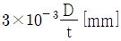
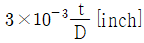
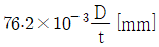
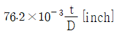
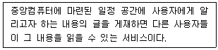
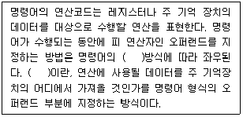
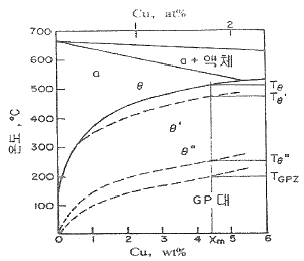
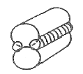

와전류비파괴검사기사(구) (2011-06-12 기출문제)
1과목: 와전류탐상시험원리
1. 자체유도계수가 50×10-3[H]인 코일이 있다. 0.1초 사이에 5[A]의 전류가 증가한다면 이 회로에 발생하는 유도 기전력의 방향과 크기는?
- 전류의 방향으로 2.5[V]
- 전류의 역방향으로 2.5[V]
- 전류의 방향으로 25[V]
- 전류의 역방향으로 25[V]
(정답률: 알수없음)

2. 와전류의 표면침투깊이(standard depth of penetration)는 표면 와전류 밀도의 약 몇 % 되는 곳을 의미하는가?
- 16%
- 32%
- 37%
- 63%
(정답률: 알수없음)
3. 시험주파수 100kHz로 와류탐상시험시 다음 중 표준 침투깊이가 가장 깊은 재료는?
- 은
- 구리
- 알루미늄
- 오스테나이트계 스테인리스강
(정답률: 알수없음)
4. 다음 중 와전류탐상검사가 적합하지 않은 재료는?
- 구리 관
- 알루미늄 봉
- 강철 봉
- 플라스틱 관
(정답률: 알수없음)
5. 와류에 의한 표피효과는 시험체 표면 가까이에서 일어난다. 다음 중 표피효과를 변화시킬 수 없는 요소는?
- 시험주파수
- 시험체의 투자율
- 시험체의 전도도
- 시험체 재질의 색
(정답률: 알수없음)
6. 직류(DC) 회로에서 I는 전류, E는 전압, R은 저항이라 할 때, I, E 및 R의 관계를 적절히 표현한 것은?
- I = E/R
- I = R/E
- I = 1/ER
- I = ER
(정답률: 알수없음)
7. 방사선투과시험에서 엑스선 필름의 감도를 높이기 위해 사용하는 증감지가 아닌 것은?
- 형광 증감지
- 자분 증감지
- 금속박 증감지
- 금속 형광 증감지
(정답률: 알수없음)
8. 다음 중 서로 관련이 없는 것으로 짝지어진 것은?
- 누설검사 – 추적가스
- 침투탐상검사 – 모세관 현상
- 자분탐상검사 – 적심성
- 방사선투과검사 – 투과도계
(정답률: 알수없음)
9. 와전류탐상검사 장치에 포함되지 않는 것은?
- 코일(coil)
- 증폭기(Amplifier)
- 윤활유(Liquid couplant)
- 기록장치(Strip chart recorder)
(정답률: 알수없음)
10. 누설검사법 중 기포누설시험의 장점으로 볼 수 없는 것은?
- 비용이 저렴하며 안전한 시험이다.
- 한 번에 전면 검사를 실시할 수 있다.
- 온도, 습도, 바람 등에 별다른 영향을 받지 않는다.
- 프로브(탐침)나 스니퍼(탐지기) 등이 필요하지 않다.
(정답률: 알수없음)
11. 다음 중 캘빈온도 0 K 와 같은 것은?
- -273℃
- -173℃
- +173℃
- +273℃
(정답률: 알수없음)
12. 다음 중 초음파탐상검사에서 결함을 가장 쉽게 검출할 수 있는 탐상시점은?
- 거친 다듬질 후
- 정밀 다듬질 전
- 표면이 거칠어지는 열처리 전
- 감쇠를 적게 할 수 있는 열처리 후
(정답률: 알수없음)
13. 다음 중 침투탐상시험과 비교하여 자분탐상시험의 장점으로 옳은 것은?
- 절연체인 재료도 탐상할 수 있다.
- 비철금속 재료도 탐상할 수 있다.
- 페인트 처리된 강 재료도 탐상할 수 있다.
- 표면이 복잡한 형상의 시험체도 쉽게 탐상할 수 있다.
(정답률: 알수없음)
14. 다음 중 와전류탐상검사로 검사가 곤란한 것은?
- 페인트의 두께 측정
- 도금의 두께 측정
- 배관 용접부 내부의 기공
- 탄소강과 스테인리스강과의 재질 구별
(정답률: 알수없음)
15. 비파괴검사법 중 육암검사법에 대한 설명과 가장 거리가 먼 것은?
- 다른 검사법에 비하여 비교적 검사가 간단하다.
- 다른 검사법에 비하여 검사비용이 저렴한 편이다.
- 다른 검사법에 비하여 통상적으로 검사속도가 빠르다.
- 다른 검사법에 비하여 내부 및 표면결함 검출이 우수하다.
(정답률: 알수없음)
16. 잔류응력의 비파괴적 측정이 가능한 응력·변형률 측정방법은?
- 광탄성 피막법
- 응력 도료막법
- 홀로그래피법
- 자기스트레인 응력 측정법
(정답률: 알수없음)
17. 금속의 용접부위에 대한 체적형 내부 결함검출에 가장 효과적인 비파괴검사법은?
- 방사선투과시험
- 자분탐상시험
- 침투탐상시험
- 와전류탐상시험
(정답률: 알수없음)
18. 자분탐상검사에서 자화방법의 선정에 대한 설명으로 틀린 것은?
- 반자계가 생기는 자화방법을 선정한다.
- 탐상 면에 손상을 주지 않는 자화방법을 선정한다.
- 자속의 방향이 탐상 면에 가능한 한 평행이 되는 자화방법을 선정한다.
- 예측되는 결함 방향에 대하여 자계의 방향을 가능한 한 직각이 되는 자화방법을 선정한다.
(정답률: 알수없음)
19. 결함의 유해성에 관한 설명 중 옳은 것은?
- 결함을 가지고 있는 구조물의 강도가 저하하는 양상은 그 결함의 형상과 방향에 따라 다르다.
- 곡면이 있는 결함은 주로 단면적의 감소에 기인하여 강도를 증가시킨다.
- 가늘고 긴 결함은 단면적의 감소 이외에 결함부의 지시길이에 기인하여 강도를 증가시킨다.
- 표면결함과 내부결함에서 동일종류, 동일치수의 결함이면 내부결함의 경우가 표면결함보다 유해하다.
(정답률: 알수없음)
20. 와류탐상검사의 장점으로 볼 수 없는 것은?
- 튜브에 대해 비접촉으로 고속, 자동화 검사가 가능하다.
- 자동화장치는 신호해석에 검사자가 숙련되지 않아도 된다.
- 시험데이터의 보존이 가능해 보수검사에 이요할 수 있다.
- 탐상 및 재질검사 등 복수 데이터를 동시에 얻을 수 있다.
(정답률: 알수없음)
2과목: 와전류탐상검사
21. 와전류 탐상 시험편의 이송속도가 느린 경우의 기록신호에 비교하여 반응속도를 빠르게 하였다면, 동일 결함의 신호는 기록계상에서 어떻게 변화하는가?
- 변화 없다.
- 크게 된다.
- 작게 된다.
- 기록계의 종류에 따라 다르다.
(정답률: 알수없음)
22. 직경 2인치의 검사코일 내에 직경 1.5인치의 봉이 놓여져 있을 때 충전율(fill-factor)은 약 얼마인가?
- 0.263
- 0.375
- 0.563
- 0.753
(정답률: 알수없음)
23. 와전류 신호에 영향을 주는 요소로써 전기적인 변화가 아닌 것은?
- 주파수
- 자장의 세기
- 투자율
- 충전율(fill-factor)
(정답률: 알수없음)
24. 관통코일에 의하여 관에 발생하는 와전류에 관한 설명으로 옳은 것은?
- 축 방향으로 흐른다.
- 관의 반경 방향으로 흐른다.
- 관의 원주 방향으로 흐른다.
- 관의 외표면에 맴돌이 형상으로 흐른다.
(정답률: 알수없음)
25. 다음 중 와전류 시험으로 두께 측정이 곤란한 것은?
- 철판 위의 유성 페인트 도막
- 구리판 위의 유성 페인트 도막
- 구리판에 도금된 크롬 도금층
- 아크릴 판 위의 수성 페인트 도막
(정답률: 알수없음)
26. 열교환기 전열관을 내삽형 코일로 검사할 경우, 시험주파수 설정시 고려하여야 할 요인으로 가장 거리가 먼 것은?
- 표준침투깊이가 대략 튜브 두께의 1.1배가 되도록 설정한다.
- 결함에 의한 신호와 흔들림(wobbling)에 의한 신호의 위상이 구분되어야 한다.
- 반드시 저주파수를 사용하여 외면 결함에 대한 감도를 올리고 분해능이 좋도록 한다.
- 충전율의 변화(혹은 내면 결함의 의한 신호)와 외면결함에 의한 신호의 위상차가 90°가 되는 것이 좋다.
(정답률: 알수없음)
27. 와전류 신호를 얻기 위해서 시험체는 어떤 조건이어야 하는가?
- 전도체이어야 한다.
- 절연체이어야 한다.
- 반도체이어야 한다.
- 강자성체이어야 한다.
(정답률: 알수없음)
28. 시험체의 인접한 두 부분의 차이를 검출하는 시험코일을 무엇이라 하는가?
- 단일방식
- 자기비교방식
- 표준비교방식
- 상호비교방식
(정답률: 알수없음)
29. 와전류 탐상시험 코일 중 두께 측정용은?
- 절대형
- 자기비교형
- 차동형
- 상호비교형
(정답률: 알수없음)
30. 와전류 탐상검사시 두께 3mm인 강관을 4kHz로 탐상하여 좋은 결과를 얻었다면 두께가 1.5mm인 강관에 대한 시험주파수는?
- 1 kHz
- 4 4
- 8 kHz
- 16 kHz
(정답률: 알수없음)
31. 열교환기 전열관의 와전류 탐상시험에서 대비시험편의 관통구멍에 의한 신호의 위상각을 40°로 조정하였다면 다음 중 내면결함으로 해석할 수 있는 신호의 위상각은?
- 10°
- 45°
- 90°
- 135°
(정답률: 알수없음)
32. 와류탐상검사에 사용되는 시험방법을 분류할 때 시험코일 임피던스 변화의 검출방법에 의한 분류에 해당하는 것은?
- 위상분석 시험법
- 교류자기 포화시험법
- 잔류자장 시험법
- 수직편향도 측정시험법
(정답률: 알수없음)
33. 코일과 시험체 표면과의 거리가 변하는 것에 의해 잡음이 발생하는 것은 다음 중 어떤 효과에 의한 것인가?
- 표피효과(Skin effect)
- 끝단부효과(End effect)
- 모서리효과(Edge effect)
- 리프트-오프효과(Lift-off effect)
(정답률: 알수없음)
34. 탄소강관의 와전류 탐상시험에서 자기포화장치의 구성으로 옳은 것은?
- 발진기, 여자용 직류전원, 탈자장치
- 평형회로, 여자용 교류전원, 냉각장치
- 자화코일, 여자용 교류전원, 탈자장치
- 자화코일, 여자용 직류전원, 냉각장치
(정답률: 알수없음)
35. 와전류 탐상시험에서 위상해석을 이용한 장치로 검출하고자 하는 결함신호와 잡음을 구분하기 위해서는 위상차가 몇 도에 가까운 주파수를 선정하여야 하는가?
- 0°
- 90°
- 180°
- 270°
(정답률: 알수없음)
36. 차동형 코일로 밸런스를 맞추고자 할 경우 다음 중 가장 적절한 코일의 배치상태는?
- 두 코일 모두 표준시험편의 결함 부위에 위치시킨다.
- 두 코일 모두 표준시험편의 건전한 부분에 위치시킨다.
- 한 코일은 표준시험편의 건전한 부분에, 다른 코일은 검사체의 결함 부위에 위치시킨다.
- 한 코일은 표준시험편의 건전한 부분에, 다른 코일은 검사체의 건전한 부분에 위치시킨다.
(정답률: 알수없음)
37. 와전류 탐상검사시 피복이나 도금의 두께 측정에 이용되는 코일의 형식은?
- 관통코일
- 내삽형코일
- 보빈코일
- 프로브형코일
(정답률: 알수없음)
38. 교류에 관한 설명으로 옳지 않은 것은?
- 유도성 리액턴스(XL)의 단위는 Henry이다.
- 코일이 들어있는 교류회로에서는 전류와 전압 사이에 위상차가 생긴다.
- 교류에서 임피던스의 구성요소 중 하나인 저항(R)은 회로에 직류가 흐를 때의 전기 저항과 같다.
- 저항에 비하여 유도성 리액턴스가 커질수록 전류와 전압 사이의 위상차도 커지지만, 리액턴수가 저항에 비하여 아무리 크더라도 전류와 전압의 위상차는 90° 이상 차이가 날 수 없다.
(정답률: 알수없음)
39. 와전류 탐상시험에서 결함신호를 정량적으로 측정하는 방법으로 타당하지 않은 것은?
- Time delay 측정법
- Peak to peak amplityde 측정법
- Maximum rate phase angle 측정법
- Vertical maximum amplitude 측정법
(정답률: 알수없음)
40. 강관에 발생하는 결함 중 와전류 탐상검사로 검출할 수 없는 것은?
- 언더컷
- 로울러 자국
- 용접균열
- 원주방향 균열
(정답률: 알수없음)
3과목: 와전류탐상관련규격
41. 동 및 동합금관의 와류 탐상 시험 방법(KS D 0214)에서 규정한 대비시험편의 드릴 구멍은 관의 길이 방향으로 몇 개의 인공결함을 가지는가?
- 3개
- 4개
- 5개
- 6개
(정답률: 알수없음)
42. 경관의 와류 탐상 검사 방법(KS D 0251)에서 와류 탐상 검사시 감도의 선택을 위하여 사용해야 할 인공흠은 원칙적으로 무엇에 따라서 구분 저거용하도록 되어 있는가?
- 탐상기의 모델
- 탐상시험자의 경력
- 코일의 외경과 형식
- 강관의 용도 및 제조방법
(정답률: 알수없음)
43. 열교환기 비자성 튜브의 와류탐상시험(ASME Sec. V, Art. 8)규정에서 보고서에 기술하여야 할 필수 내용이 아닌 것은?
- 신호진폭
- 주사 속도
- 튜브 벽두께 방향으로의 지시 깊이
- 튜브길이 방향위치 및 지지율로부터의 위치
(정답률: 알수없음)
44. 강의 와류 탐상 시험 방법(KS D 0232)에 의한 대비시험편 인공 흠의 가공에 관한 설명을 옳지 않은 것은?
- 인공 흠의 가공은 방전가공으로 한다.
- 드릴 구멍은 표면에 수평으로 가공한다.
- 각진 흠은 시험체 길이 방향으로 가공한다.
- 인공 흠의 줄, 연마포 등으로 연마해서는 안된다.
(정답률: 알수없음)
45. 티타늄관의 와류 탐상 검사 방법(KS D 0074)에 의한 탐상장치의 주된 구성품에 해당되지 않는 것은?
- 시험코일
- 관송장치
- 자동경보장치
- 자기포화장치
(정답률: 알수없음)
46. ASTM E 215의 “이음매 없는 알루미늄합금관의 와류탐상시험”에 사용할 기본 대비시험편의 인공 결함의 직경을 구하는 식으로 옳은 것은? (단, D는 튜브의 직경, t는 튜브의 두께이며, D와 t의 단위는 동일하다.)




(정답률: 알수없음)
47. 강의 와류 탐상 시험 방법(KS D 0232)에 관한 설명으로 옳지 않은 것은?
- 원형 봉강 대비시험편의 인공 흠은 드릴구멍으로 한다.
- 인공 흠의 종류 기호는 각진 흠은 N, 드릴구멍은 D로 나타낸다.
- 시험은 목적에 따라 제품의 가공 또는 처리공정의 적절한 시기에 한다.
- 탐상기는 발진기, 전기적 신호를 처리하는 전기장치, 표시장치 등으로 구성된다.
(정답률: 알수없음)
48. 티타늄관의 와류 탐상 검사 방법(KS D 0074)에서 규정하고 있는 시험주파수 범위는 얼마인가?
- 1~252 kHz
- 1~512 kHz
- 0.5~1000 kHz
- 0.1~1 kHz
(정답률: 알수없음)
49. 보일러 및 압력용기에 대한 와전류탐상검사(ASME Sec. V Art. 26 SE-243)에서 대비 표준시험편에 반지름 방향으로 100% 관통한 드릴 구멍 3개의 인공 불연속을 만드는 경우 이 드릴 구멍의 횡방향 간격은 연속하여 몇 도마다 일정한 간격으로 하여야 하는가?
- 30도 간격
- 60도 간격
- 90도 간격
- 120도 간격
(정답률: 알수없음)
50. 동 및 동합금관의 와류 탐상 시험 방법(KS D 0214)에서 규정한 대비결함에 관한 설명으로 옳지 않은 것은?
- 대비결함의 지름은 0.5~2.0mm로 한다.
- 대비결함은 시험편에 만든 인공결함이다.
- 대비결함의 크기는 관의 치수에 따라 정한다.
- 대비결함은 시험편의 관축에 수평으로 뚫린 줄홈으로 한다.
(정답률: 알수없음)
51. ASTM E 215에서 규정한 Primary Reference Standard의 기준결함을 결정하는 인자는?
- 검사할 튜브의 조성
- 검사할 튜브의 크기
- 검사할 튜브의 종류
- 검사할 튜브의 사용목적
(정답률: 알수없음)
52. 보일러 및 압력용기에 대한 관제품의 와전류 탐상검사(ASME Sec. V, Art.8)에서 불연속의 깊이는 주로 탐상신호의 어떤 부분에 의해 측정되는가?
- 위상각
- 수평축의 강도
- 수직축의 강도
- 20% 평저공과의 강도 비교
(정답률: 알수없음)
53. 코팅된 페라이트계 재료에 대한 와류탐상검사(ASME Sec. V, Art. 8 App. Ⅲ)에서 코팅 두께는 교차되는 1/4인치 이내의 범위에서 어떻게 측정하는가?
- 최초값으로 결정한다.
- 3회 측정값의 평균치로 한다.
- 5회 측정값의 평균치로 한다.
- 10회 측정값의 평균치로 한다.
(정답률: 알수없음)
54. 강관의 와류 탐상 검사 방법(KS D 0251)에서 규정하고 있는 주파수 범위로 옳은 것은?
- 0.1~512 kHz
- 0.5~512 kHz
- 0.5~1024 kHz
- 1.0~1024 kHz
(정답률: 알수없음)
55. 동 및 동합금관의 와류 탐상 시험 방법(KS D 0214)에 따른 와전류 탐상시험에서 자기 포화를 하여야 하는 시험체는?
- 동합금 용접관
- 이음매 없는 동관
- 이음매 없는 동합금관
- 이음매 없는 니켈 동합금관
(정답률: 알수없음)
56. 사용자 인증의 문제로써 허가되지 않은 사용자가 허위정보를 삽입하거나 시스템에 위장된 자료를 보내는 위험의 경우는?
- 데이터 가로막기(interruption)
- 데이터 가로채기(interception)
- 데이터 수정(modification)
- 데이터 위조(fabrication)
(정답률: 알수없음)
57. 서브 도메인에 해당하는 기관으로 옳게 연결된 것은?
- go – 일반회사
- re – 정부기관
- co – 대학
- hs – 고등학교
(정답률: 알수없음)
58. 자기증식형 바이러스로써 바이러스 자신이 네트워크나 이메일 등을 통해 번져가면서 증식시키는 바이러스는?
- 트로이목마(Trojan Horse)
- 웜(worm)
- 메모리상주형
- 스니핑(sniffing)
(정답률: 알수없음)
59. 다음이 설명하고 있는 웹 서비스는?

- 전자대화
- 홈뱅킹
- 전자게시판
- 파일전송
(정답률: 알수없음)
60. 다음 ( )안에 공통으로 들어갈 용어는?

- 주소지정
- 워드머신
- 메모리지정
- 번지해독
(정답률: 알수없음)
4과목: 금속재료학
61. 오스테나이트계 스테인리스강의 입계부식을 방지하는 대책으로 적합하지 않은 것은?
- 고온으로부터 급랭하고 400~800℃에서 장시간 유지한다.
- 크롬탄화물이 석출하지 않도록 탄소량을 0.03% 이하로 아주 낮게 유지한다.
- 1000~1150℃로 가열하여 크롬탄화물 고용시킨 다음 급랭한다.
- C와 친화력이 Cr보다 큰 Ti, Nb, Ta 등의 안정화원소를 첨가한다.
(정답률: 알수없음)
62. 헤드필드(Hadfield) 강에 대한 설명으로 틀린 것은?
- 베이나이트 조직을 가진 강이다.
- 고온에서 서냉하면 결정립계에 M3C 가 석출한다.
- 고온에서 서냉하면 오스테나이트가 마텐자이트로 변태한다.
- 열전도성이 나쁘고, 팽창계수도 커서 열변형을 일으킨다.
(정답률: 알수없음)
63. 주철(Cast Iron)의 파면에 따른 분류로 옳은 것은?
- 회주철, 백주철, 구성흑연주철
- 회주철, 백주철, 가단주철
- 회주철, 백주철, 냉경주철
- 회주철, 백주철, 반주철
(정답률: 알수없음)
64. 알루미늄 합금에서 가공재는 냉간가공과 열처리에 의하여 기계적 성질이 달라지므로 질별(質別)기호를 붙여 사용한다. “W”의 기호가 의미하는 것은?
- 어닐링한 것
- 가공 경화한 것
- 용체화 처리한 것
- 제조한 그대로의 것
(정답률: 알수없음)
65. 스털링 실버(sterling silver)는 어떤 합금인가?
- Ag-Sn 합금
- Ag-Pt 합금
- Ag-Cu 합금
- Al-Si 합금
(정답률: 알수없음)
66. 금속초미립자의 특성을 설명한 것 중 옳은 것은?
- 융점이 금속덩어리보다 높다.
- 활성이 약하여 화학반응을 일으키지 않는다.
- 저온에서 열저항이 매우 작아 열의 양도체이다.
- Fe계 합금 초미립자는 금속덩어리보다 자성이 약하다.
(정답률: 알수없음)
67. ASTM 결정립도번호 n, 100배 배율의 1 in2에 존재하는 결정립수를 N 이라고 하면 N = 2n-1로 주어진다. 만약에 어떤 재료가 200배 미세조직사진에서 1 in2에 64개의 결정립이 관찰된다면 ASTM 결정립도 번호는?
- 6
- 7
- 8
- 9
(정답률: 알수없음)
68. 순철의 Ac3 변태에 관한 설명으로 틀린 것은?
- 격자상수가 감소한다.
- 비체적이 작기 때문에 수축한다.
- 자기강도가 Ac3 점에서 급격히 감소한다.
- BCC인 α-Fe 이 FCC인 γ-Fe 로 변태한다.
(정답률: 알수없음)
69. 내열성 주물로서 공랭 실린더, 피스톤 등에 사용되는 합금으로 조성이 Al-Cu-Ni-Mg인 합금은?
- Silumin
- Lautal
- Y 합금
- Hydronalium
(정답률: 알수없음)
70. 고속도공구강(SKH51)의 주요 합금 첨가 원소로 옳은 것은?
- Co-Be-W-Cr
- N-Cr-Ni-Co
- W-Cr-Mo-V
- Co-Ni-W-Sn
(정답률: 알수없음)
71. 그래프는 Al-Cu계 합금에서 각종 상들의 용해도 곡선을 나타내고 있는 것이다. Xm 조성을 갖는 합금의 경우 시효온도에 따른 석출상의 종류가 가장 많은 시효온도 범위는 무엇인가?

- TGPZ 아래
- Tθ″ - TGPZ
- Tθ′ - Tθ″
- Tθ ~ Tθ′
(정답률: 알수없음)
72. 수소저장합금 재료가 갖추어야 할 구비 조건이 아닌 것은?
- 활성화가 용이할 것
- 수소의 흡수 및 방출속도가 작을 것
- 상온부근에서 수기압의 수소해리 평형압을 가질 것
- 단위중량 및 단위체적당의 수소흡수 및 방출량이 많을 것
(정답률: 알수없음)
73. 다음 중 쌍정(twin)에 대한 설명 중 옳지 않은 것은?
- 쌍정변형은 원자의 전단적인 이동에 의해 형성되는 응력완화 현상이다.
- 쌍정은 기계적 가공시 발생하는 현상이므로 열처리시는 발생하지 않는다.
- 쌍정형성시 결정의 방위가 변화하게 되므로 이후 새로운 슬립계가 작용할 수 있게 된다.
- 쌍정은 특정의 평면을 경계로 하여 처음의 결정과 경면적 대칭의 관계에 있는 원자배열을 갖는 결정이다.
(정답률: 알수없음)
74. 마그네슘의 특징을 설명한 것 중 틀린 것은?
- 기계가공이 용이하다.
- 비중이 약 1.74인 가변운 금속이다.
- 용융점은 약 350℃로 저용융점 금속이다.
- 금속 정련시 탈황, 탈산 등의 용도로 쓰인다.
(정답률: 알수없음)
75. 다결정체인 탄소강 중에 함유된 P(인)의 영향으로 틀린 것은?
- 고온취성의 원인이 된다.
- Fe3P로 입계에 편석하며, 입자의 조대화를 촉진한다.
- Fe3P는 MnS 또는 MnO와 같이 집합하여 고스트 라인을 형성하고 강의 파괴 원인이 된다.
- P의 함유량은 공구강에서는 0.025% 이하, 주강에서는 0.03% 이하가 좋다.
(정답률: 알수없음)
76. 알루미늄 합금의 인성을 향상시키기 위한 방법으로 틀린 것은?
- 기지금속의 순도를 높이고 Fe, Si 등 불순물을 제한한다.
- 용탕처리를 하여 비금속개재물과 가스성분을 제거한다.
- 가공열처리에 의해 조직을 침상화 한다.
- 조대 석출물의 생성을 억제한다.
(정답률: 알수없음)
77. 강에서 내식성을 가장 많이 향상시키는 원소는?
- Co, V
- Nb, Cu
- S, Mn
- Cr, Ni
(정답률: 알수없음)
78. Fe-C 상태도에 나타나지 않는 불변반응은?
- 공정반응
- 표정반응
- 공석반응
- 포석반응
(정답률: 알수없음)
79. 강에 쾌삭상을 향상시키기 위하여 첨가하는 원소가 아닌 것은?
- S
- Ca
- Cu
- Pb
(정답률: 알수없음)
80. 구상흑연주철에서 스테다이트(steadite)의 다른 명칭은?
- 탄화철
- 유화철
- 질화철
- 인화철
(정답률: 알수없음)
5과목: 용접일반
81. 용접법에 대한 설명으로 옳지 않은 것은?
- 직류 아크용접 시 발생되는 아크열은 60~75%가 음극에서 발생한다.
- 피복 아킁요접은 가스용접보다 두꺼운 판의 용접에 사용한다.
- 아크는 교류아크보다 직류아크가 안정되어 있다.
- 핍고 아크용접이 가스용접보다 열이 높다.
(정답률: 알수없음)
82. 가접(tack welding)에 대한 설명 중 틀린 것은?
- 가접은 본 용접과 비슷한 기량을 가진 용접사에 의해 실시한다.
- 용접의 시점, 종점 및 모서리에는 필히 해야 한다.
- 조립상 부득이 중요 부위에 가접했을 경우, 본 용접하기 직전 갈아내는 것이 좋다.
- 가접 시에는 본 용접보다는 지름이 약간 작은 용접봉을 사용하는 것이 좋다.
(정답률: 알수없음)
83. 무부하 전압이 80V이고, 아크전압이 30V인 AW-200 교류용접기를 사용할 때, 내부손실을 4kW라 하면 이 용접기의 효율과 역률은 각각 얼마인가?
- 효율 : 61.5%, 역률 : 60%
- 효율 : 62.5%, 역률 : 54%
- 효율 : 54%, 역률 : 61.5%
- 효율 : 60%, 역률 : 62.5%
(정답률: 알수없음)
84. 초음파 탐상검사법의 장·단점의 설명 중 잘못된 것은?
- 탐상결과를 즉시 알 수 없고 자동탐상이 불가능하다.
- 검사 시험체의 한 면에서도 검사가 가능하다.
- 접촉매질(couplant), 표준시편(STB), 대비시편(RB) 등이 필요하다.
- 결함의 위치와 크기를 비교적 정확히 알 수 있다.
(정답률: 알수없음)
85. CO2 가스 아크 용접에서 뒷댐 재료의 종류가 아닌 것은?
- 세라믹 제품
- 글라스테이프
- 구리 뒷댐재
- 석면 뒷댐재
(정답률: 알수없음)
86. 100% 탄산가스 용접에서 솔리드 와이어를 사용하여 용접했을 때 저전류(약 200A이하)에서의 용적 이행방식은?
- 단락 이행
- 입상 이행
- 스프레이 이행
- 스트리밍 이행
(정답률: 알수없음)
87. 용접부가 급냉 되었을 때 나타나는 현상 설명으로 틀린 것은?
- 연신율 저하
- 용접부의 취화
- 내균열성 향상
- 열영향부의 경화
(정답률: 알수없음)
88. TIG 용접에 대한 설명으로 틀린 것은?
- 가스 노즐은 열에 견딜 수 있는 세라믹 또는 구리를 사용한다.
- 텅스텐 전극 고정은 콜릿 바디와 콜릿 척으로 한다.
- 순텅스텐 전극은 토륨텅스텐 전극에 비해 전자 방사능력이 뛰어나 강, 스테인리스강 용접에 사용된다.
- 용접부가 불활성 가스로 둘러싸여 있어 대기와의 접촉에 의해 발생되는 산화, 질화 등을 방지할 수 있다.
(정답률: 알수없음)
89. 미그(MIG)용접에서 사용되는 용접기의 특성으로 가장 적합한 것은?
- 부저항 특성
- 저전류 특성
- 역류특성
- 정전압 또는 상승특성
(정답률: 알수없음)
90. 다음 물질 중에서 아세틸렌과 접촉하여도 폭발할 위험성이 없는 것은?
- 철(Fe)
- 동(Cu)
- 은(Ag)
- 수은(Hg)
(정답률: 알수없음)
91. 고주파 전류를 이용하여 가열하는 납땜법은?
- 티그 납땜
- 노 내 납땜
- 유도가열 납땜
- 담금 납땜
(정답률: 알수없음)
92. 탄산가스 아크 용접의 장점으로 틀린 것은?
- 솔리드 와이어를 이용한 용접법에서는 용제를 사용할 필요가 없다.
- 용접봉을 갈아 끼우는 시간이 필요 없으므로 용접작업시간을 길게 할 수 있다.
- 가시(可視)아크이므로 시공이 편리하다.
- 일반적으로 바람의 영향을 크게 받지 않는다.
(정답률: 알수없음)
93. 용접시공에 있어서 잔류응력을 감소시키기 위한 방법으로 적당하지 않는 것은?
- 예열을 실시한다.
- 모재 재질을 변경한다.
- 적당한 용접순서와 용착법을 조절한다.
- 용착금속의 양이 가능한 한 적게 되도록 한다.
(정답률: 알수없음)
94. 피복 아크 용접기의 정격전류가 200A이고, 정격사용율이 50%일 때, 이 아크 용접기의 연속사용이 가능한 최대전류는 약 몇 A 인가?
- 121
- 136
- 141
- 200
(정답률: 알수없음)
95. 다음 그림과 같은 플레어 용접의 흠 종류는?

- V형
- X형
- K형
- J형
(정답률: 알수없음)
96. 가스용접 시 저압식(발생기식)토치에 사용되는 아세틸렌의 압력은 약 몇 kgf/cm2 이하 인가?
- 0.15
- 0.07
- 0.1
- 1.0
(정답률: 알수없음)
97. 다음 용접법 중 잠호용접 이라고도 하는 것은?
- 테르밋 용접
- 서브머지도 아크 용접
- 일렉트로 슬래그 용접
- 프로젝션 용접
(정답률: 알수없음)
98. 용적이 40리터인 산소 용기의 고압계가 90 kgf/cm2 으로 나타났다면 시간당 300리터가 산소를 소비하는 팁으로는 이론적으로 몇 시간 용접할 수 있는가? (단, 산소와 아세틸렌의 혼합비는 1:1이다.)
- 6
- 9
- 12
- 15
(정답률: 알수없음)
99. KS에 의한 연강용 피복아크 용접봉 종류 중 저수소계 용접봉인 것은?
- E4301
- E4303
- E4316
- E4326
(정답률: 알수없음)
100. 점용접의 특징에 대한 설명으로 올바르지 않은 것은?
- 포터블 점 용접기를 이용하면 이동 작업도 가능하다.
- 가압력에 의하여 조직이 조대화 된다.
- 용접부 표면에 돌기가 발생하지 않는다.
- 작업속도가 빠르고 용접변형이 비교적 적다.
(정답률: 알수없음)
ε = -L(di/dt) = -(50×10-3[H])(50[A/s]) = -2.5[V]
따라서, 유도 기전력의 방향은 전류의 역방향이며, 크기는 2.5[V]이다. 이는 자체유도계수가 양수이므로, 전류의 증가에 반대 방향으로 유도 기전력이 발생하는 것을 의미한다.